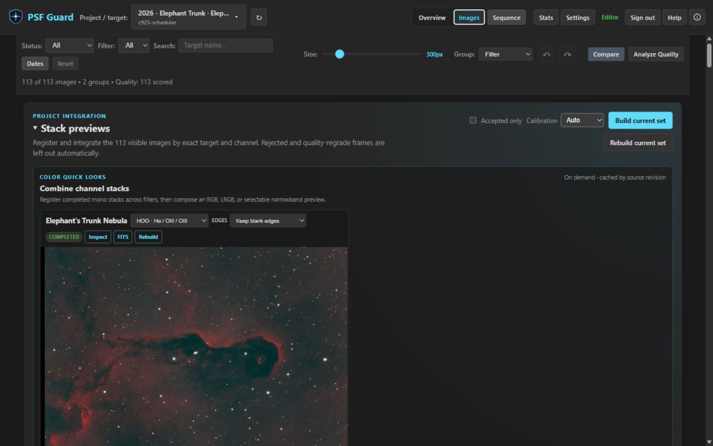
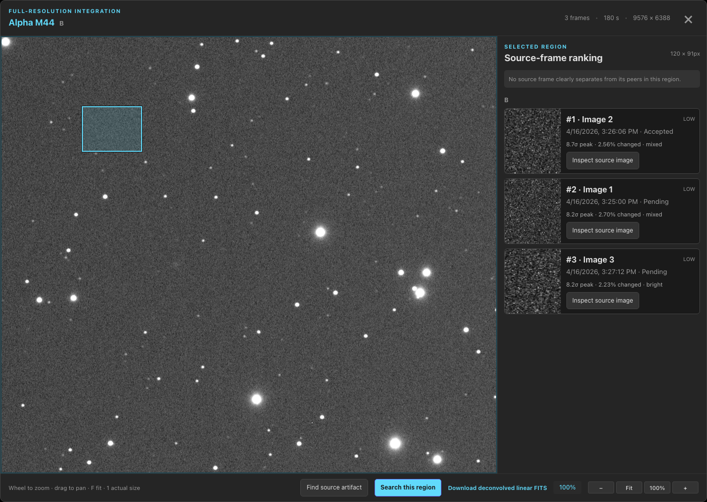

Stack Previews
Check an integration before committing hours to processing: PSF Guard live-stacks the graded frames of a target right inside the grader — safely calibrated, per channel, in color, and with your current grades and sequence checks.
Per-channel previews from graded frames
From a project's stack panel, PSF Guard integrates the selected or visible frames per exact target and filter with Seiza registration. The selection policy runs before registration: catalog rejects and current sequence-analysis regrade recommendations are excluded before registration, so the preview shows what your accepted data actually stacks into. The latest successful result for each channel is kept durably in the cache; rebuilding one channel never discards its siblings.


Choose calibration per stack or channel
The stack panel can build bias, dark, dark-flat, and flat masters from the catalog's safely matched library. Auto applies only masters with a sound dependency chain; Force on applies every master it can build and warns about risky cases; Off integrates raw lights. The project choice is remembered, while each target/filter card can override it independently.
Multi-night stacks divide themselves into calibration sessions when the lights need different flats or darks, then swap masters as each group is integrated. A failed master no longer fails the stack: the card names what was skipped and why, continues with the safe masters, and keeps the exact applied set in its resume and provenance identity.
Open Calibration Libraries → for import, hard matching rules, flats-only pedestal handling, hot-pixel safeguards, master caching, and sky-flat advice.

Build a whole night without babysitting it
Build buttons stay live while a build runs. Each click queues a channel behind the one working, every card shows its own queued or running state, and the status line counts what is waiting. Stop ends the build in front; once a queue forms it becomes Stop all. A stop lands between frames, between channels, and between calibration masters, so it takes effect within about one frame's work rather than instantly. Nothing half-finished is ever published: a channel stopped before its FITS and preview are written leaves no artifact, and channels that already finished keep theirs.
Because a queue makes rebuilding cheap, a rebuild that only added frames resumes from where the last one finished instead of integrating the night again, and the card counts the restored work. A checkpoint is reused only when it is provably an ancestor of the new set — identical source fingerprints for every recorded frame, the same calibration, the same Accepted-only policy, the same pipeline. Anything else restacks from scratch and the card says which of those changed, so a slow full rebuild is never a mystery.
A build belongs to the server, not to the tab that started it. The header carries a Stacking indicator while any mono or color build is queued or running — in every view and across databases — and the panels re-attach to a running job when they mount. Leave the grid, reload the page, come back: the work is still there. Superseded artifacts are swept from the cache behind you.
Inspect at full resolution, stretch, download
The preview opens in the same inspector the grader uses — zoom, pan, fit, and one-pixel-per-pixel — and the display stretch is a parameterized Seiza stretch you can adjust or revert without recomputing the integration. The cached result stays linear: download it as FITS and drop it straight into your processing workflow.


Every channel the same way up
A German equatorial mount turns the field 180° when it flips, and registration matches star triangles at any angle — so both halves of such a night stack cleanly, but the reference frame alone would decide which way up the result comes out. Shoot filters in blocks across the meridian and two channels of one target could face opposite ways.
PSF Guard anchors that choice to the sky instead. A cached plate solve or a
valid embedded WCS on the reference frame says which way north points, and the
stack is published with north in the upper half of the frame. Failing that it
reads the frame's PIERSIDE, interpreted through what a solved
channel in the same build already taught it about which side faces which way.
Failing both, it follows whichever way most of that stack's own exposure
faced. No plate solve is run for this, and it is only ever a half turn —
your camera angle is kept, and nothing is resampled.
Color composition: LRGB and narrowband palettes
When the required channel stacks exist, combine them without rebuilding the integrations. PSF Guard discovers unambiguous L/R/G/B and Ha/OIII/SII roles from the durable mono stacks, registers filters onto the luminance or H-alpha reference, and calls Seiza's color combiners. Available palettes are SHO, SOH, HSO, HOS, OSH, OHS, and HOO plus Foraxx-SHO and Foraxx-HOO; targets without SII automatically expose only the HOO variants.


Rebuilt source channels mark remembered color results stale without hiding them, so you always know when a combination no longer reflects the freshest channel data. Color outputs are cached with full provenance (source jobs, palette, policy, Seiza revision) as screen and native PNG plus an RGB 32-bit-float FITS whose header records the palette and linear-versus-display transfer semantics.
Trim the edges registration leaves behind
Registering one channel onto another leaves blank margins where that frame did not reach. Each color card now carries an Edges picker: keep them, trim to the box the covered pixels span, or trim to the largest rectangle every channel covers in full. The default is unchanged, so results you already have stay valid.
The choice is part of the job identity, so each one keeps its own cached
artifact and applying a processing stack retains the crop the card is showing.
The crop happens before normalization, so every channel is scaled from the
same patch of sky, and CRPIX moves onto the cropped grid so the
FITS keeps its plate solution. A finished card reports the kept size and the
share of the grid retained — and when one channel's coverage sits far
from the others, which is a pointing error rather than dither, it names the
channel that bounded the crop.
Background extraction and processing controls
Color previews fit and subtract each input channel's background before cross-filter registration, using Seiza background extraction with per-channel fit diagnostics. The editable processing stack exposes additive or multiplicative correction controls and ordered per-input and output stretch stacks — with complete phase progress while a job runs.

Opt-in deconvolution
Stack previews can apply Seiza deconvolution as an opt-in processing step, sharpening the preview without touching the cached linear integration. Like the display stretch, it is a reversible view decision — toggle it, compare, and download either representation.
Reuse named processing setups
Both View processing and the color Processing stack can save their parameters under a name. Choose a built-in or saved setup, inspect the values it fills into the editor, then run Apply processing; selecting a setup never starts an expensive render by itself.
A view setup contains its display stretch and optional deconvolution. A color setup contains background extraction, per-channel input processing, and output stretches. Applying a color setup to another target matches its channels by name and leaves deconvolution opt-in for channels the setup did not explicitly name.
Saved setups are global across every configured database. Manage, delete, import, or export them in Settings → Setups; exports can contain one setup or the whole collection. Viewers on an authenticated server may list, apply, and export setups, while saving, deleting, and importing need an editor.
Find which frame left that mark
A stack makes a satellite trail, a reflection, a dust shadow, or a hot region far easier to see than any single sub does. Open the full-size inspector, choose Find source artifact, and drag a box around the suspect area: PSF Guard maps that region back through each frame's own registration and ranks the source frames by how far each one departs from its peers there.

Results carry the peak sigma, the direction — bright or dark — and a cautious shape label: compact spot, diagonal trail, defocused ring, broad dark shadow. Low-evidence results stay unclassified rather than guessing. The search never grades anything for you; it points, and you decide. It cannot isolate a defect that lands in the same registered place in every frame, because that defect becomes part of the baseline it compares against. A region must be at least 8 pixels a side, and dragging past 512 stops the box at 512 rather than clearing it.
Take the data out for real stacking
When the preview convinces you the data is worth a full run, export the non-rejected lights and their safely matched calibration frames straight into your stacking pipeline. Rejects are never exported; ungraded frames are opt-in. Keep the default target-grouped tree, or choose the WBPP layout and use its generated PixInsight handoff scripts.
Open the Export for Stacking guide → for desktop and browser steps, CLI filters, repeat-export behavior, API examples, and troubleshooting.